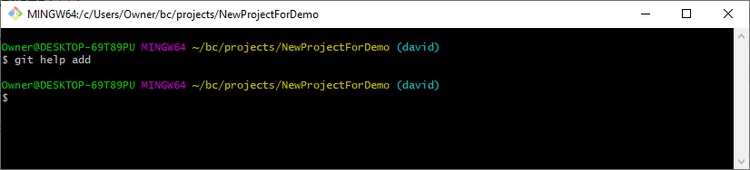
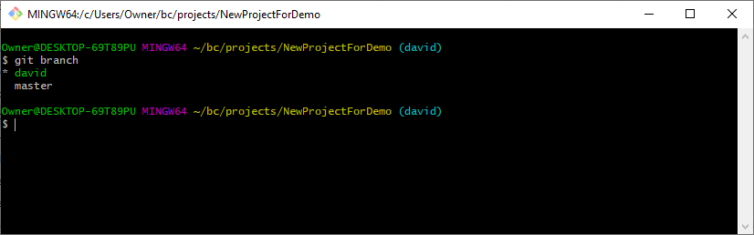

Common git commands
Getting help using git
git --help
Example:
If you want help on a specific git command, type in the following:
git help commandName
This will bring up a webpage on your default browser providing more help on the specified command.
Example:

This is the webpage it will bring up:
Creating a clone of a branch
git clone branchURL
Determining the status of your files
git status
Example:
When using git status after you create a new file, you will get a message indicating the presence of "untracked files":
However, after you add the new file to the staging area with the 'git add newFile.html' command, you will get a different status:
Adding a file to the staging area
git add newFile.html
Example:
Adding all new/modified files to the staging area:
git add -A
Example:

Removing a file from the staging area
Creating your own branch of a project
git branch branchname
Switching to a different branch
git checkout branchtoname
Example:
NOTE: Switching branches changes files in your working directory!
Getting a list of the branches in your local repository
git branch
Example:
